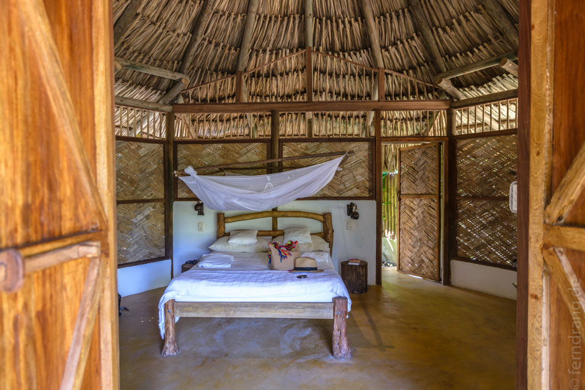
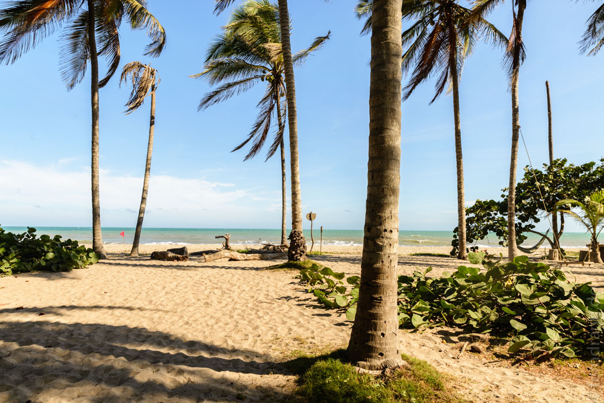

12/01/2016
Genug Cartagena. Auf nach Palomino! Das kleine Örtchen liegt weiter östlich an der Küste und verspricht tolle Strände und Nähe zum beliebten Nationalpark "Tayrona", wo man zu den noch schöneren Stränden wandern muss. Auf dem Papier war das ein Katzensprung, der in etwa 4 Stunden zu schaffen sein sollte. In der Realität haben wir die doppelte Zeit gebraucht, drei mal den Bus gewechselt und sind zuletzt, längst im Dunkeln, von Motorrad-Taxis irgendwo im Busch abgesetzt worden. Mit Taschenlampen haben wir erstmal andere Gäste erschreckt, die wir für die Rezeption hielten. Letztlich sind wir fündig geworden und haben es uns in einer sehr schönen und großen Hütte im weitläufigen "La Sirena" gemütlich gemacht. Hier ist auch alles Eco. Aber hier äußert sich das durch gelungenes Naturdesign der Einrichtungen, eine ziemlich verrückte Kompost-Toilette und (freiwillige!) Yoga-Kurse.


17/01/2016
Der idyllische Platz am Meer macht es uns leicht, uns von den Unternehmungen der letzten Wochen zu erholen. Hier gibt es ein paar Hängematten, schattige Plätze und einen starken, heißen Wind, der fast die ganze Zeit die rote Fahne flattern lässt. Unsere weiteren Vorhaben, wie etwa die Wanderung im Tayrona-Park, haben wir schnell verdrängt. Stattdessen haben wir die letzten Tage gemütlich und vollkommen tatenlos an uns vorbeiziehen lassen.
Nach einer Weile ist uns das teilvegane Yoga-Essen in unserem Resort auf den Wecker gegangen, was uns zu einem fast 200m langen Spaziergang Richtung Ort verleitete – unser längster Ausflug. Wir mussten feststellen, dass die Ecke auch bei Backpackern sehr beliebt ist, was außerordentlich nerven kann. Mit subtilem Mimik-Kongfu konnten wir die notorischen Gespräche (Woher? Wie lang? What's next? … Wow! Really??) umgehen. Der Lonely Planet hat sich in seinen Beschreibungen zum Ort auch selbst untertroffen. Der Autor empfiehlt alles und jeden und scheint es hier einfach super toll gefunden zu haben. Das ist wohl auch einigen Strandhippies so ergangen, die vor Jahren einfach nicht nach Hause gefahren sind und jetzt zum Inventar gehören. Aber letztlich kann man es hier gut aushalten, wenn man unbehelligt in seiner Hängematte döst und sich dem Tropentod durch Kokosnussschlag aussetzt.
Der Rückweg sollte lieber unerwähnt bleiben, weil er uns ein weiteres Mal über den Flughafen von Miami führte, der unter Connaisseuren einen besonderen Ruf fürs Reiseverderben hat.